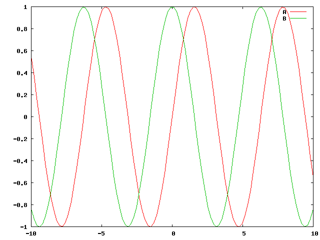
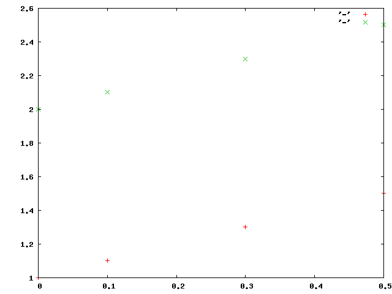
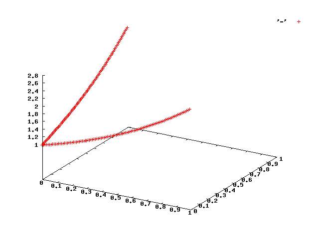

ChimiはCommon Lispにおける, 雑多なユーティリティを
提供するパッケージです.
ChimiはgaraemonがいくつかのCLライブラリを開発する過程で,
共通につかっているちょっとした関数, マクロを集めたものです.
Chimiは主に, CLOSにおけるクラス定義を簡潔にするためのインタフェイス,
時間測定のための諸関数, gnuplotへのインタフェイスから構成されます.
また, ChimiはSBCLでのみ, 動作します.
何かご質問などがあれば, garaemon__at__garaemon.netまで.
ChimiはいくつかのCommon Lispライブラリに依存しています.
これらのライブラリを別途インストールしてください.
また, gnuplotのインタフェイスを利用するためには,
gnuplotがインストールされている必要があります
$ tar xvzf chimi-x.x.x.tar.gz
$ cd chimi
$ make
using defclass*
(require :chimi)
(use-package :chimi)
;; define <hoge> class
(defclass* <hoge>
()
((a 100)
(b nil)))
(defvar *hoge* (make-instance <hoge>))
(a-of *hoge*) ;; => 100
(setf (b-of *hoge*) 200) ;; => 200
(defvar *fuga* (make-instance <hoge> :a 200 :b "hogee"))
(a-of *fuga*) ;; => 200
(b-of *fuga*) ;; => "hogee"
using mtimer
(defvar *timer* (make-mtimer))
(defun fib (n)
(if (< n 2)
n
(+ (fib (- n 1)) (fib (- n 2))))))
(start-mtimer *timer*)
(fib 30)
(stop-mtimer *timer*) ;; -> foobar sec.. like 2.33
using gnuplot
ploting function in 2d
(open-gnuplot) ;; make gnuplot child process
(plot-function "sin(x)")

ploting some graphs and set titles
(plot-function "sin(x)" :dimension 2 :title "A")
(plot-function "cos(x)" :dimension 2 :clear nil :title "B")

plotting some points-sets
(plot-points '(((0 1) (0.1 1.1) (0.3 1.3) (0.5 1.5))
((0 2) (0.1 2.1) (0.3 2.3) (0.5 2.5))))

plotting points intepritingly
(clear-gnuplot-datum)
(dotimes (i 100)
(one-data-plot (list (/ i 100.0)
0
(exp (/ i 100.0)))
:dimension 3)
(one-data-plot (list 0
(/ i 100.0)
(exp (/ i 100.0)))
:dimension 3)
)

save to an image
(save-plot-to-png "hoge.png")